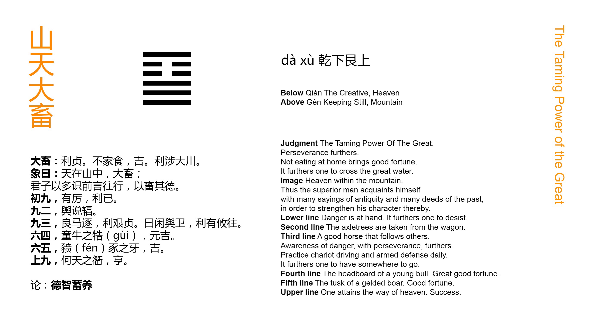

Chinese: 大畜 ䷙ dà xù

Under the conditions of Dà Xù ䷙ it will be advantageous to be firm and correct. (If its subject do not seek to) enjoy his revenues in his own family (without taking service at court), there will be good fortune. It will be advantageous for him to cross the great stream.
1. The first NINE, undivided, shows its subject in a position of peril. It will be advantageous for him to stop his advance.
䷙ changing to ䷑
Matching Line 1 in Adjacent Hexagram: ䷘
2. The second NINE, undivided, shows a carriage with the strap under it removed.
䷙ changing to ䷕
Matching Line 2 in Adjacent Hexagram: ䷘
3. The third NINE, undivided, shows its subject urging his way with good horses. It will be advantageous for him to realise the difficulty (of his course), and to be firm and correct, exercising himself daily in his charioteering and methods of defence; then there will be advantage in whatever direction he may advance.
䷙ changing to ䷨
Matching Line 3 in Adjacent Hexagram: ䷘
4. The fourth six, divided, shows the young bull, (and yet) having the piece of wood over his horns. There will be great good fortune.
䷙ changing to ䷍
Matching Line 4 in Adjacent Hexagram: ䷘
5. The fifth six, divided, shows the teeth of a castrated hog. There will be good fortune.
䷙ changing to ䷈
Matching Line 5 in Adjacent Hexagram: ䷘
6. The sixth NINE, undivided, shows its subject (as) in command of the firmament of heaven. There will be progress.
䷙ changing to ䷊
Matching Line 6 in Adjacent Hexagram: ䷘
Dà Xù ䷙ has two meanings. It is the symbol of restraint, and of accumulation. What is repressed and restrained accumulates its strength and increases its volume. Both these meanings are found in the treatise on the Tuàn; the exposition of the Great Symbolism has for its subject the accumulation of virtue. The different lines are occupied with the repression or restraint of movement. The first three lines receive that repression, the upper three exercise it. The accumulation to which all tends is that of virtue; and hence the name of Dà Xù ䷙, 'the Great Accumulation.'
What the Tuàn teaches, is that he who goes about to accumulate his virtue must be firm and correct, and may then, engaging in the public service, enjoy the king's grace, and undertake the most difficult enterprises.
Line 1 is subject to the repression of 4, which will be increased if he try to advance. It is better for him to halt.
Line 2 is liable to the repression of 5, and stops its advance of itself, its subject having the wisdom to do so through its position in the central place. The strap below, when attached to the axle, made the carriage stop; he himself acts that part.
Line 3 is the last of Qián ☰, and responds to the sixth line, the last of Gèn ☶, above. But as they are both strong, the latter does not exert its repressive force. They advance rapidly together; but the position is perilous for 3. By firmness and caution, however, its subject will escape the peril, and the issue will be good.
The young bull in line 4 has not yet got horns. The attaching to their rudiments the piece of wood to prevent him from goring is an instance of extraordinary precaution; and precaution is always good.
A boar is a powerful and dangerous animal. Let him be castrated, and though his tusks remain, he cares little to use them. Here line 5 represents the ruler in the hexagram, whose work is to repress the advance of evil. A conflict with the subject of the strong second line in its advance would be perilous; but 5, taking early precaution, reduces it to the condition of the castrated pig. Not only is there no evil, but there is good fortune.
The work of repression is over, and the strong subject of line 6 has now the amplest scope to carry out the idea of the hexagram in the accumulation of virtue.